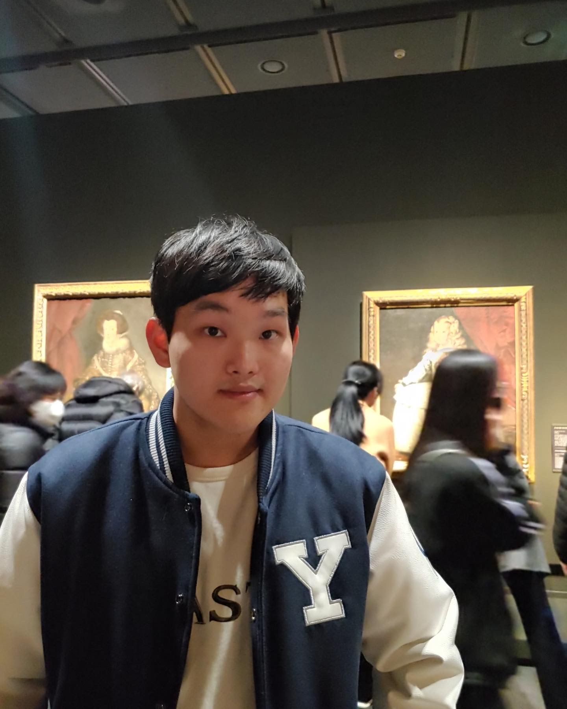

- PROFILE
- FAVOURITES
- YSAL
You can call me Thomas
이름: 최진혁 (Jinhyuk Choi), Thomas(토마스와 친구들에서의 토마스, 그리고 톰과제리에서의 톰을 좋아해서 토마스가 됐답니다.)
생년월일: 2001년 04월 25일생
출생지(고향): 서울특별시
거주지: 경기도 의왕시
MBTI: ESTP(S,T약 90, P는 의외로? 60정도?)
키: Around 5-6 feet 대략 180좀 안됩니다.
학력: 4수를 하면 학력이 화려해진답니다! 여려분들도 N수하세읍읍!
연세대학교 문과대학 불어불문학과(재학/23학번)
국민대학교 경영대학 재무금융회계학부 재무금융학전공(자퇴)
우성고등학교(졸업)
갈뫼중학교(졸업)
백운초등학교(졸업)
